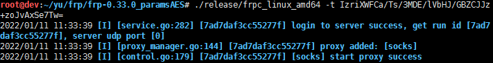

前言
参数版已经有很多大佬改造过了，因为最近有需求需要把参数加密化，网上没找到现成的，所以手动改造，顺便学一点go语言 😅
基于uknowsec大佬的文章 FRP改造计划 ，实现作者说的：
所以可以直接加一些加密啥的，-t参数传入ip加密后的地址，然后在源码里加一个解密的步骤即可。
另外，个人觉得只加密ip不够隐蔽，所以连同port一起进行AES加密
改造
只需要修改cmd/frpc/sub/root.go即可
1. 创建AES函数
1 2 3 4 5 6 7 8 9 10 11 12 13 14 15 16 17 18 19 20 21 22 23 24 25 26 27 28 29 30 31 32 33 34 35 36 37 func PKCS7Padding (ciphertext []byte , blockSize int ) []byte padding := blockSize - len (ciphertext)%blockSize padtext := bytes.Repeat([]byte {byte (padding)}, padding) return append (ciphertext, padtext...) } func PKCS7UnPadding (origData []byte ) []byte length := len (origData) unpadding := int (origData[length-1 ]) return origData[:(length - unpadding)] } func AesEncrypt (origData, key []byte ) ([]byte , error) block, err := aes.NewCipher(key) if err != nil { return nil , err } blockSize := block.BlockSize() origData = PKCS7Padding(origData, blockSize) blockMode := cipher.NewCBCEncrypter(block, key[:blockSize]) crypted := make ([]byte , len (origData)) blockMode.CryptBlocks(crypted, origData) return crypted, nil } func AesDecrypt (crypted, key []byte ) ([]byte , error) block, err := aes.NewCipher(key) if err != nil { return nil , err } blockSize := block.BlockSize() blockMode := cipher.NewCBCDecrypter(block, key[:blockSize]) origData := make ([]byte , len (crypted)) blockMode.CryptBlocks(origData, crypted) origData = PKCS7UnPadding(origData) return origData, nil }
2. 初始化中定义传参
只需传一个参数，里面包含ip和port即可
1 2 3 4 5 6 func init() { rootCmd.PersistentFlags().StringVarP(&cfgFile, "config", "c", "./frpc.ini", "config file of frpc") rootCmd.PersistentFlags().BoolVarP(&showVersion, "version", "v", false, "version of frpc") + rootCmd.PersistentFlags().StringVarP(&ipPort, "ipPort", "t", "", "ip port") kcpDoneCh = make(chan struct{}) }
3. 新增函数
1 2 3 4 5 6 7 8 9 10 11 12 13 14 15 16 17 18 19 20 21 22 func getFileContent (ipPort string ) AesKey := []byte ("1qaz2wsx3edc4rfv" ) encrypted, _ := base64.StdEncoding.DecodeString(ipPort) origin, err := AesDecrypt(encrypted, AesKey) if err != nil { panic (err) } arr := strings.Fields(string (origin)) ip := arr[0 ] port := arr[1 ] var content string = `[common] server_addr = ` + ip + ` server_port = ` + port + ` tls_enable = true token = socks [socks] type = tcp remote_port = 1800 plugin = socks5 ` fileContent = content }
4. 修改runClient函数
1 2 3 4 5 6 7 8 9 10 11 12 13 14 15 16 17 18 19 20 21 22 + func runClient(cfgFilePath string, ipPort string) (err error) { var content string + getFileContent(ipPort) + // content, err = config.GetRenderedConfFromFile(cfgFilePath) + content, err = fileContent, nil if err != nil { return } cfg, err := parseClientCommonCfg(CfgFileTypeIni, content) if err != nil { return } pxyCfgs, visitorCfgs, err := config.LoadAllConfFromIni(cfg.User, content, cfg.Start) if err != nil { return err } err = startService(cfg, pxyCfgs, visitorCfgs, cfgFilePath) return }
5. 调用runClient()
1 2 3 4 5 6 7 8 9 10 11 12 13 14 15 16 17 18 var rootCmd = &cobra.Command{ Use: "frpc", Short: "frpc is the client of frp (https://github.com/fatedier/frp)", RunE: func(cmd *cobra.Command, args []string) error { if showVersion { fmt.Println(version.Full()) return nil } // Do not show command usage here. + err := runClient(cfgFile, ipPort) if err != nil { fmt.Println(err) os.Exit(1) } return nil }, }
6. 编译
修改根目录package.sh，实现直接生成编译文件而不打包
1 2 3 4 5 6 7 8 9 10 11 12 13 14 15 16 17 18 19 20 21 22 23 24 25 26 27 28 29 30 31 make if [ $? -ne 0 ]; then echo "make error" exit 1 fi frp_version=`./bin/frps --version` echo "build version: $frp_version " make -f ./Makefile.cross-compiles rm -rf ./release/packages mkdir -p ./release/packages os_all='linux windows darwin freebsd' arch_all='386 amd64 arm arm64 mips64 mips64le mips mipsle' cd ./releasefor os in $os_all ; do for arch in $arch_all ; do frp_dir_name="frp_${frp_version} _${os} _${arch} " frp_path="./packages/frp_${frp_version} _${os} _${arch} " cd .. rm -rf ${frp_path} done done cd -
编译
效果

参考链接
https://uknowsec.cn/posts/notes/FRP改造计划.html